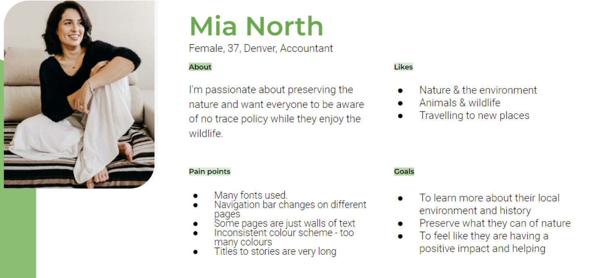
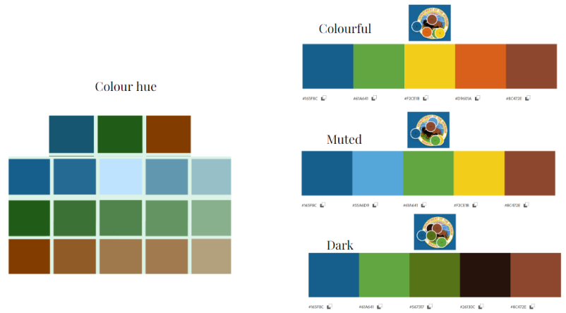
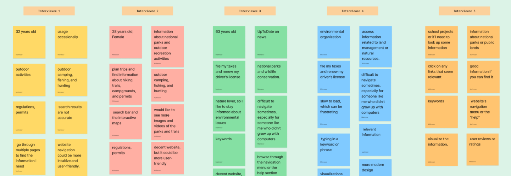
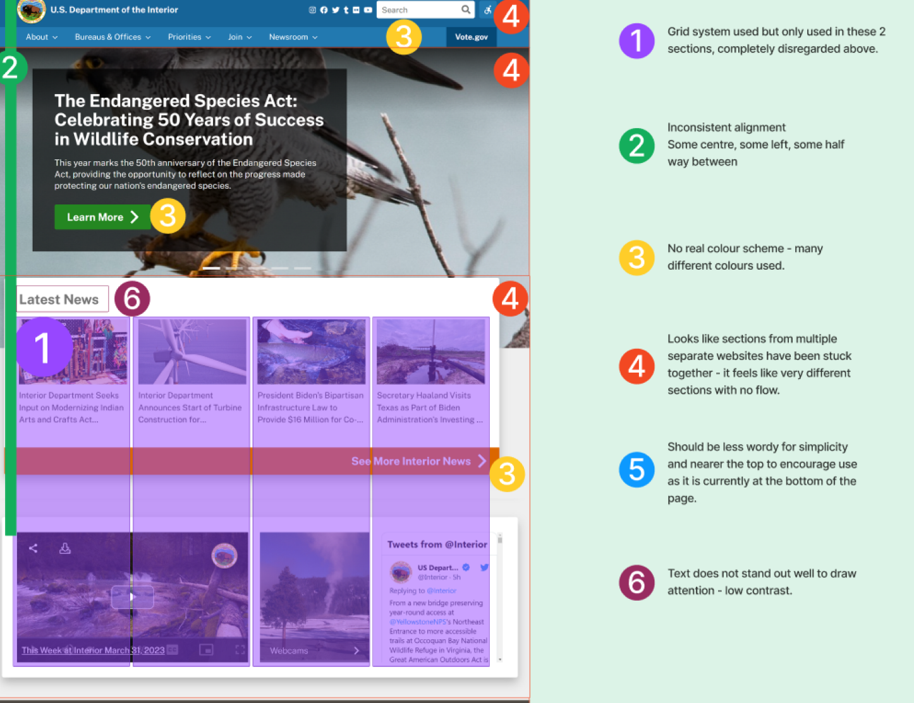
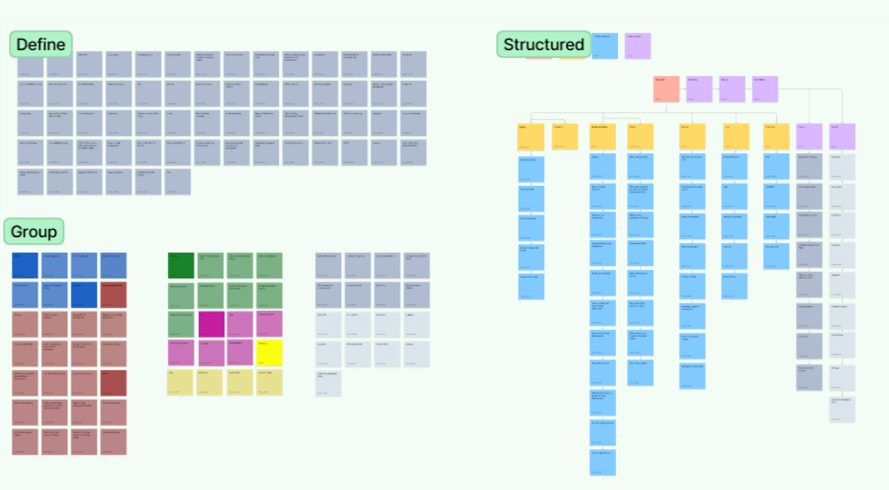
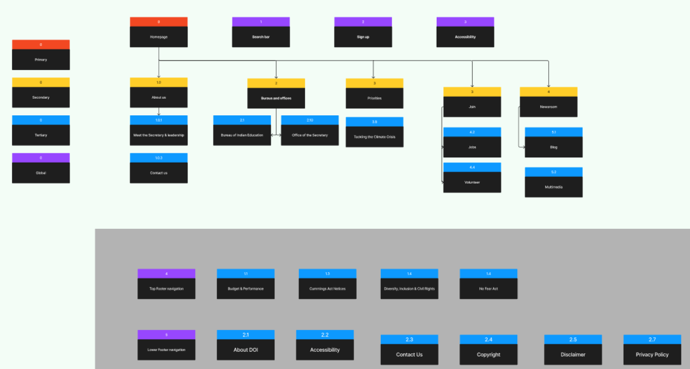
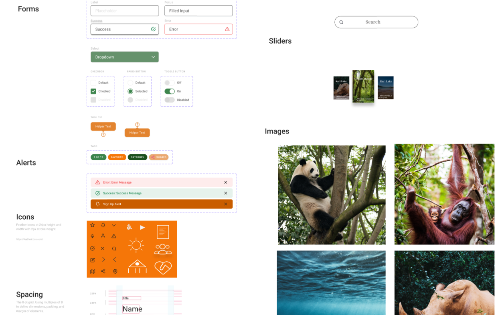
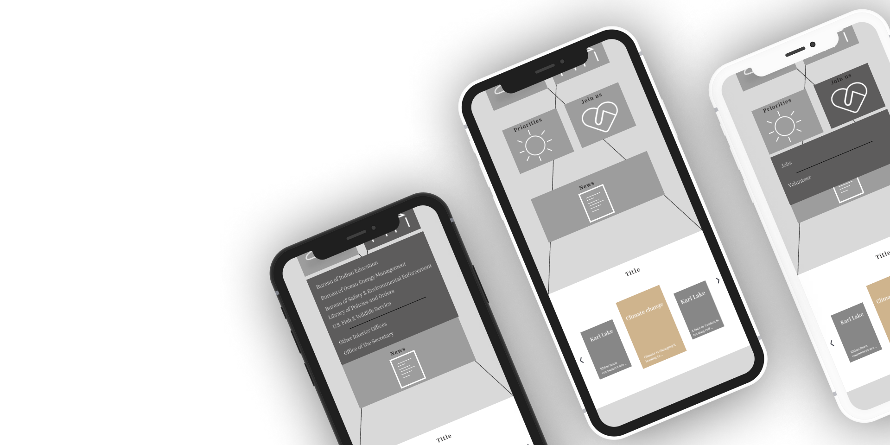
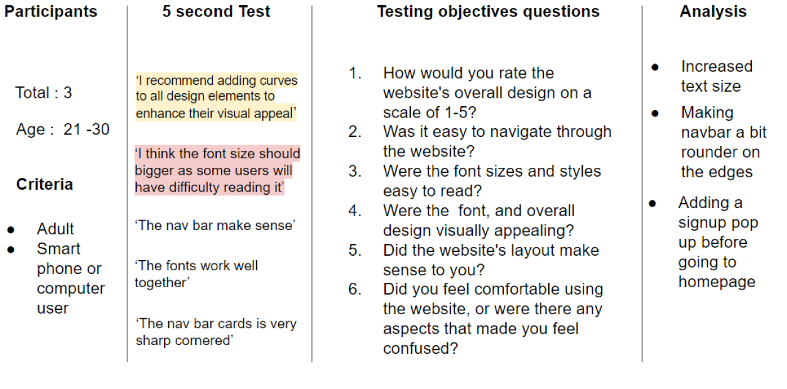

User Research
To initiate the redesign process, I began by conducting a comprehensive usability review and testing of the existing website. Subsequently, I engaged in brainstorming sessions and collaborated with teammates to identify the potential user base. Using assumptions as a starting point, I created Proto-Personas.

Colour Accessibility Test
Generally colours just need to be made a little darker to get AAA result. Two blue colours very similar so could be reduced to one for simplicity. Resulting AAA colours suggested match the sites content of very natural content with nature. More earthy colours rather than bright hues.

User Research plan
As I began the UI redesign project, I wanted to go beyond just identifying user complaints and frustrations. I wanted to understand why users were feeling that way and what their goals and motivations were. To stay on track and make progress, I created a research plan that would help me gather the necessary information. This plan would guide me in uncovering valuable insights and making meaningful improvements to the user experience.
- Goals
- 1. Enhancing user experience
- 2. Improving usability
- 3. Optimizing information architecture
- 4. Enhancing visual design
Affinity Diagram & Feedback
Based on the data collected from my initial user testing, I analyzed and synthesized the information to extract specific user insights. I then organized these insights into an Affinity Diagram, which enabled me to identify not only the needs and frustrations of users but also closely observe their behavior and identify potential areas of opportunity

Definition & Ideation
Heuristic Analysis
The Sitemap and page layouts of the DOI website pose challenges in terms of navigation. The menus in the header and footer have an excessive number of selectable options, including duplicates. The layout of the header, footer, and body of text-heavy pages are areas of concern as they lack consistency in terms of hierarchy, size, and alignment. Additionally, the color scheme across the website lacks consistency.
Design Solutions
To address these issues, our design solution focuses on minimizing clutter, maintaining consistency in layout, and prioritizing content.

Information Architecture
Card Sorting
Following our team's completion of a card sorting analysis, we utilized our findings to redesign the sitemap of DOI's website. Our main objective was to streamline the site and reduce the overwhelming amount of information, making it more user-friendly and easier to navigate.

Sitemap Re-design
Having completed the card sort, I took the proposed information architecture and compared it to the current layout. While the streamlined version looks simpler, it did give some unnecessary information. I redesigned the sitemap with necessary information as I observed that users mainly go to the search bar to find something rather than in the Navbar.

UI Style Guide
After analyzing the gathered research data and conducting initial design work, I proceeded with creating the homepage for the website. The first design task I undertook was focused on the navigation element. I paid special attention to the content and hierarchy relationship between different sections of the website, aiming to create a seamless and intuitive user experience. To achieve this, I iteratively designed and tested both desktop and mobile versions of the navigation. I also incorporated UI elements from the style tile I created earlier to ensure consistency and coherence in the design. Overall, the design process involved careful consideration of user needs and preferences to create a highly usable and aesthetically pleasing homepage.

Prototyping
Wireframes
I completed finalizing the prototype interactions and made all necessary design tweaks. With the design now in its final form, I was ready to move forward with conducting a usability test. Specifically, I prepared to administer a 5-second usability test to assess the effectiveness of the design and ensure that it met the user's needs.

5 Second Test
